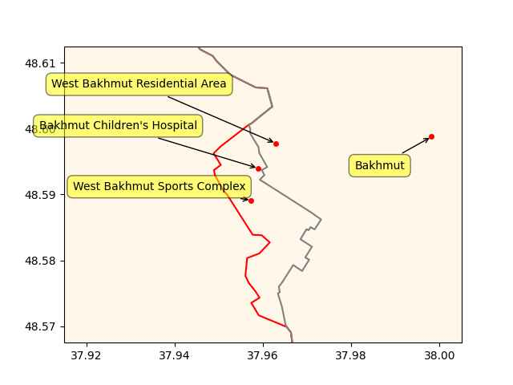

Week 21
Nyserda: "Governor Kathy Hochul today announced a $10 million initiative to advance innovative clean hydrogen research, development and demonstration projects"
There are bizarre ideas on population growth and its place in economics.. Some keep arguing more people are needed for growth, but that is mainly a right-wing argument, they just want cheap labor, more people competing for jobs is good for them as they root for the bosses, "the supply side". See below, povery caused population growth. Population growth in the industrial age did not fuel the industrial age, it was the result of it. Econ growth does not need numbers, it needs know-how. You don't need more workers to pay for retirees. Current accounting could indicate that, but the efficacy of that accounting is in question.
The Limits to Growth, the 30 Year Update: In poor countries.. [b]ecause immediate requirements leaves little output for industrial investment, the economy grows only slowly. The demographic transition stays stuck in the middle phase, with a large gap between birth and death rates. When women see no attractive educational or economic alternatives to childbearing, children are one of the few forms of investment available; thus the population grows bigger without growing richer. As the saying goes, 'The rich get richer and the poor get children.'
International gatherings can become paralyzed by passionate arguments.. Poverty causes population growth, or population growth causes poverty.. By drawing output away from investment and into consumption, population growth slows capital growth. Poverty, in turn, perpetuates population growth by keeping people in conditions where they have no education, no health care, no family planning, no choices, no power, no way to get ahead except to hope their children can bring in income or help with family labor...
Food production in every part of the South has increased greatly over the past 20 years. In most places it has doubled or tripled. But because of rapid population growth, food production per person has barely improved, and in Africa it has steadily decreased. The only places where food production has noticeably kept ahead of population growth are Europe and the Far East. The graphs.. show a double tragedy. The first is a human one. A great agricultural achievement, a tremendous increase in food production, has been largely absorbed not in feeding people more adequately but in feeding more people inadequately. The second tragedy is environmental. The increase in food production has been attained by policies that damaged soils, waters, forests, and ecosystems, a cost that will make future production increases more difficult.
But any positive feedback loop that grinds a system down can be turned around to lift the system up. More poverty means more population, which means more poverty. But less poverty means slower population growth, which means less poverty. With enough investment sustained for a long enough time, with fair pricing for products and labor, with increasing output allocated much more directly to the poor, and especially to the education and employment of women and to family planning, the effects of the population–poverty loop can be reversed"
Energy Voice: "Namibia’s cabinet has approved an agreement with Hyphen Hydrogen Energy on a $10 billion project. The plan is for sub-Saharan Africa’s largest – and only fully vertically integrated – green hydrogen project. At peak, the facility should produce 2 million tonnes per year of green ammonia for regional and global markets"
WION: "Tough to include Ukraine in NATO while war goes on: Stoltenberg"
TASS: "Ukrainian conflict triggered by aspiration to bring it to NATO — Kissinger"
TASS: "Ukraine must accept loss of Crimea — Kissinger"
Wasn't migration one of the primary reasons for Brexit? The Brexit that was "delivered" by the cons?
CNBC: "UK net migration hits record high of 606,000"
2030 BMW X5 #H2
Later in the article he says 'there could be more lithium'. Wishful thinking... The estimates give a number for discovered + yet undiscovered reserves an estimate on the total. If that number falls short (and it does), the tech's future is in trouble.
He understates the problem, the reserves are enough for only a quarter of transportation needs. But at least NS acknowledged the issue, not many BEVtards do.
Noah Smith: "The current amount of lithium reserves is worryingly close to the total that we might need to electrify transportation, and of course there will be competing demands for lithium from power storage, robots, appliances, and other applications"
Al-Monitor: "French navy in Mideast seizes $108M drug shipment in Indian Ocean"
H2 Fuel News: "Why are hydrogen fuel cars such a draw in Japan? Though Toyota has made the biggest headlines, other automakers are committing to H2 as well. Toyota has been outspoken in its passion about hydrogen fuel cars, already having had two versions of its Mirai on the market for several years, but other Japanese automakers have recently collectively agreed to develop their own H2 passenger vehicles"
"It's pronounced 'Sigh Pie'" - thank you #scipy 😂
"Elegant bitch with a ho glow"
Green Car Congress: "Study finds running a hydrogen plane could be cheaper than traditional aircraft by 2035; requires correct policies and incentives"
Pakistan's military / civilian rule divide, and the drama associated with it... No I dont make light of it, find it amusing - I find it familiar.
Reuters: "Saudi Arabia's NEOM Green Hydrogen Company (NGHC) has signed financial documents with 23 local, regional and international banks and investment firms on a green hydrogen production facility at a total investment value of $8.4 billion.
NGHC, a joint venture between ACWA Power, Air Products and NEOM, will produce 600 tonnes a day of carbon-free hydrogen by the end of 2026 using 4 GW of solar energy, the statement said"
Politico.eu: "Europe wants Latin America on side against Vladimir Putin. Good luck with that.. Diplomatic efforts to win support for Ukraine have been largely rebuffed so far"
WION: "The plastics industry has championed recycling as a critical solution to the rising problem of plastic waste. However, a research found that recycling itself may be producing massive amounts of microplastics"
If neoliberalism did not turn out to be the shitshow it is today and actually worked for people, and they wanted to put up a statue to honor it, the monument would have those three guys, Pinochet, Reagan and Rupert. I would use this picture with the newspaper headline engraved in stone for Rupert..
{kind=link}
Pinochet's coup in Chile allowed the "Chicago boys" to practice their mucky art unimpeded for a while in isolation. "The revolution" was copied to other countries later.
The three key events of neolib history, the Pinochet coup in Chile, Reagan's firing of 11,000 striking air traffic controllers, and that Murdoch thing with the print union workers. That is how Rupert got to join the pantheon.
AP News: "Prime Minister Narendra Modi has struck new agreements with his Australian counterpart Anthony Albanese on migration and green hydrogen"
CNBC: "The West’s oil war against Russia is starting to lose momentum.. The findings show that Moscow has been able to successfully claw back earnings from fossil fuel exports in recent weeks"
Al-Monitor: "Israeli troops on Tuesday demolished the West Bank home of a Palestinian militant who was killed after carrying out a deadly shooting"
Al Jazeera: "Russia to move newest nuclear sub to Pacific in August.. The Generalissimo Suvorov is part of the new Borei class of stealthier, more nimble undersea vessels"
Lowe: "Why AlphaFold [NN in biology] won’t revolutionise drug discovery.. DeepMind’s AlphaFold team has been having quite a run of success in predicting protein structures. This has long been considered one of the truly difficult problems in computational biology..
[But] some of the headlines have betrayed real misunderstandings about what’s been accomplished. First off, as I wrote here earlier this year, we have not made sudden huge leaps in understanding why proteins fold like they do. The AlphaFold people have made great progress in recognising different known protein folding motifs and assembling them into structures that are very often correct. Forming these coils, loops, and sheets is what proteins generally do, but ‘why?’ doesn’t enter into it...
It also needs to be emphasised that (as carefully worded above) what we have are predictions and not real protein structures. They’re good predictions and useful ones, but obtaining actual data (from x-ray, NMR, or cryo-electron microscopy) is the only way to be sure how correct they are.. That’s why press coverage about how this new prediction database will revolutionise drug discovery are overblown"
Deep Mind (Google's "AI" research lab which basically applies parroty neural nets to weak AI problems) breaking new grounds in biology..? Nah
Gulf News: "[GCC] is set to introduce a Schengen-style, unified visa for tourists and businessmen from 35 foreign and Arab countries"
Al Jazeera: "[2023/03] China is planning to host an unprecedented summit attended by senior officials from Iran and its six Arab neighbours of the Gulf Cooperation Council (GCC), according to the Wall Street Journal"
"Hypx@Hypx@mastodon.social
UAE’s Masdar targets 1 million tonnes of green hydrogen by 2030"
Catchy
"Turning todos into tadas"
Lerner: "To everyone who sees them, the new James Webb Space Telescope (JWST) images of the cosmos are beautifully awe-inspiring. But to most professional astronomers and cosmologists, they are also extremely surprising—not at all what was predicted by theory. In the flood of technical astronomical papers published online since July 12, the authors report again and again that the images show surprisingly many galaxies, galaxies that are surprisingly smooth, surprisingly small and surprisingly old. Lots of surprises, and not necessarily pleasant ones. One paper’s title begins with the candid exclamation: “Panic!”
Why do the JWST’s images inspire panic among cosmologists? And what theory’s predictions are they contradicting? The papers don’t actually say. The truth that these papers don’t report is that the hypothesis that the JWST’s images are blatantly and repeatedly contradicting is the Big Bang Hypothesis"
Same problem different country. Either unelected bureucrats run the country, or elected politicians do. Make up your mind. Can't have both.
CNBC: "Thailand’s Move Forward party swept up a majority of votes in a historic election but the official result will only be delivered a month from now... If the Move Forward party officially wins, its controversial policies could threaten the military and the monarchy. Ruling elites could ban Move Forward, just like its predecessor Future Forward, but that raises the risk of more street protests"
Military talks too much. Stop meddling in politics. Go back to your barracks. Get a coke and a smile and shut the fuck up.
The Japan Times: "Uncertainty in Pakistan as military faces unprecedented challenge to authority.. Khan’s arrest on corruption charges earlier this month, which he says was at the behest of the generals, led to violent nationwide protests, including attacks on military buildings and on the homes of senior officers"
Not sure of his mgmt chops but a pro-progressive statement is made through the pick. The corporatist wing of Dems never liked Kucinich.
NBC News: "Robert F. Kennedy Jr. names Dennis Kucinich as 2024 campaign manager"
"@mikestevens@aus.social
ngl this is a killer cast"
![[-]](https://s3.ap-southeast-2.wasabisys.com/aussocial/media_attachments/files/110/393/173/259/376/969/small/25f0406b705ffea9.jpeg){kind=link}
No wonder his Fox News had problems with Tucker, he was consorting with the enemy, giving voice to too many leftists.
Murdoch.. This guy was there when it all started. A neolib legend.
Wiki: "The Wapping dispute was a lengthy failed strike by print workers in London in 1986. Print unions tried to block distribution of The Sunday Times, along with other newspapers in Rupert Murdoch's News International group, after production was shifted to a new plant in Wapping in January 1986... All of the workers were dismissed. The failure of the strike was devastating for the print union workers, and it led both to a general decline in trade union influence in the UK... Along with the miners' strike of 1984–85, the Wapping dispute was a significant defeat in the history of the British trade union movement"
Nice
"This week my novel Der letzte Auftrag climbed to 11th place on the bestseller list in Germany. Planned and written completely in Emacs, with the help of Orgmode, Olivetti, and you guys here at Reddit. Thank you so much!"
TASS: "Russia able to conduct its special military op for a long time — German intelligence chief"
Euractiv: "Migration hardliner poised to lead Austria’s Social Democrats"
CNBC: "Isolating China will be 'impossible and dangerous,' analyst says, as the G-7 gets tough on Beijing"
Politico: "[Matthew Desmond] makes a refreshing, brutally honest case that poverty is pervasive in America by design, to enable the lifestyles of affluent people. U.S. rates of poverty are substantially higher and more extreme than those found in 25 other developed OECD countries.. [His] greatest contribution is changing the lens from individual behavior — the hoary focus of so many books about poverty — to asking and answering the larger question, 'Who benefits from practices that keep people poor?' Poverty, he argues, results from three quintessentially American habits: exploitation of the poor; subsidization of the rich; and the intentional segregation of the affluent and the poor such that opportunity is hoarded and social mobility is rare"
End of empire?
Politico: "Debt ceiling talks break down and attacks escalate as deadline approaches"
The Japan Times: "China and Russia lash out at G7 'double containment' attempt"
F24: "More than 36,000 people displaced by northern Italy floods"
Informed Comment: "[Far-right] Smotrich Plans to Send 500k further Israeli Squatters in to Steal More Palestinian Land in West Bank"
WION: "UN chief, Indian PM Modi call for reform of security council to reflect ‘realities’ of today"
Others in the Gulf were involved in Syria conflict too, but Qatar took to the effort with more gusto, became wedded to it as a win there would prove that they had "arrived". It all went bust.
Al-Monitor: "Qatar emir skips Assad's Arab League speech in Saudi Arabia.. The leaders of Saudi Arabia, Jordan and Egypt publicly praised Syrian President Bashar al-Assad’s participation in the summit after Syria was readmitted to the Arab League"
Lack of understanding will get you in harder problems. The real world is not a constrained, finite-space Go board. It is messy. That's why neural net based cars still cannot drive safely.
AlphaGo Zero was sadly another example of weak AI parroting; AG0 generated its own data, played against itself and learned from that, meaning it compressed it and "made art" from it, a dataset of over 4 million datapoints. Its programmers did make some legit algorithmic design improvements in a certain tree search approach (human coded, not deepfaked by an parrot moron algo), but the rest is... simple compression. Sample games are compressed into a neural net, for subsequent games computer can make similar moves "inspired" by that training data.. The machinery does not truly understand the game of Go.
H2 Central: "Israel Launches National Plan to Integrate Hydrogen Into Energy Landscape"
H2 Fuel News: "$2 billion Hydrogen Headstart program launches in Australia"
Roll Call: "The Wall Street Journal in late 2021 reported on satellite imagery that showed significant construction at Abu Dhabi’s Khalifa Port by the Chinese firm Cosco. The report said concerns that the construction could be a military installation"
"Nuttier than squirrel shit"
CNBC: "Cryptos have no intrinsic value and trading in them should be regulated like gambling, UK lawmakers say"
"@Hypx@mastodon.social
Drone Flies For Five Hours With Hydrogen Fuel Cell"
Al Jazeera: "Putin congratulates Russia troops, Wagner for ‘capturing Bakhmut’"
u.sm_plot_ukr1('ukrdata/fl-0521.csv','ukrdata/fl-0516.csv',["West Bakhmut Sports Complex","Bakhmut Children's Hospital","West Bakhmut Residential Area","Bakhmut"],48.59,37.96,zoom=0.005)

Sudan Tribune: "[2022/09] The U.S ambassador to Sudan, John Godfrey warned of consequences if Khartoum allows Russia to establish a military base at the Red Sea coast"
Sullivan home break in before.. some kind of notable event, sup
Blinken is about to meet the Chinese, the baloon incident.
Two days later - civil war
Blinken: "[04/12] I spoke with Sovereign Council Chair General [Burhan] today to highlight U.S. support for Sudanese democratic aspirations and to urge the swift formation of a civilian-led transitional government"
One UA mention I remember before the war was from Transporter 3, Ukranian female character gets offended when mistakenly called Russian, "we are so different, dont call me Russian!"
Finnish former commando fighting the generic baddie "Nazis" but the origin story is key, he was wronged by Russia Russia Russia.
Finland is of course an RU border country who just recently became a NATO member. In the beginning of the movie they even show the Finnish hero mining for gold, he is practically an American for god's sake! Identify with that man and his nation, please! We beg you!
Sisu - good action but has some psyop.
Regulation, fine. But we need to realize it is because the stuff isn't smart, precisely the opposite, it is too freaking stupid, parrot-like #AI
Denis Ritchie e-mail about #! usage in shell scripts #geek
![[-]](https://s3.masto.ai/media_attachments/files/110/393/849/972/493/682/original/9845aabb05666cb7.jpg){kind=link}